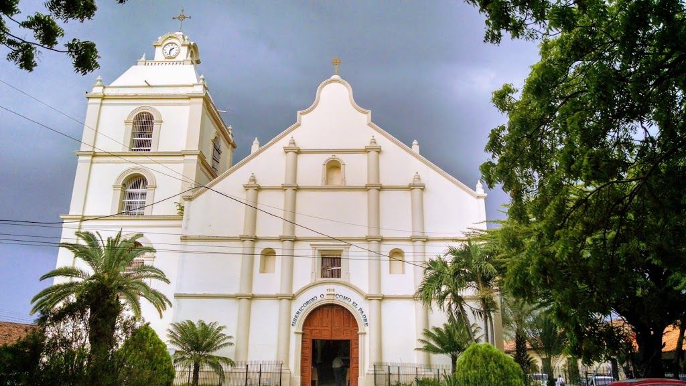

Lugares Turísticos
Puente de Choluteca

Conocido como el "puente viejo", es un símbolo histórico de la ciudad. Perfecto para fotografías y un paseo lleno de historia.
Catedral de Choluteca
Una joya arquitectónica que combina fe e historia. Su fachada y diseño interior reflejan el legado colonial
Playas de Cedeño
A solo unos kilómetros de la ciudad, Cedeño ofrece hermosas playas de arena negra y un ambiente relajante. Ideal para disfrutar del mar y la gastronomía local.
Reserva Wuacuco
Un espacio natural para los amantes de la flora y fauna. Un lugar perfecto para explorar y conectarse con la naturaleza.